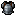

auto64-then-per-asset-cap
Point 0.0176270; global used 2; cold core 1.8 ms

Native-size images and nearest-neighbor enlarged copies. Research only; point error is not an artistic quality score.
Point 0.0176270; global used 2; cold core 1.8 ms
Point 0.0175228; global used 2; cold core 0.1 ms
Point 0.0054676; global used 4; cold core 0.4 ms

Point 0.0057419; global used 4; cold core 0.1 ms
Point 0.0012866; global used 8; cold core 0.8 ms
Point 0.0012316; global used 8; cold core 0.1 ms
Point 0.0004790; global used 16; cold core 0.9 ms
Point 0.0004132; global used 16; cold core 0.2 ms
